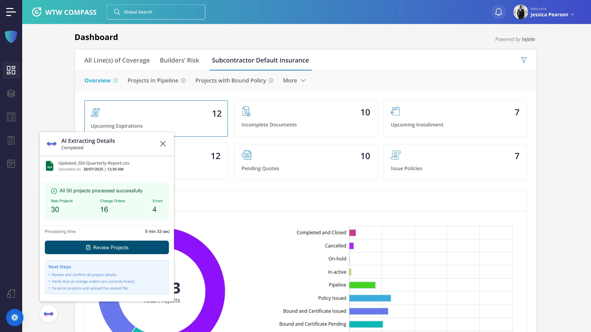
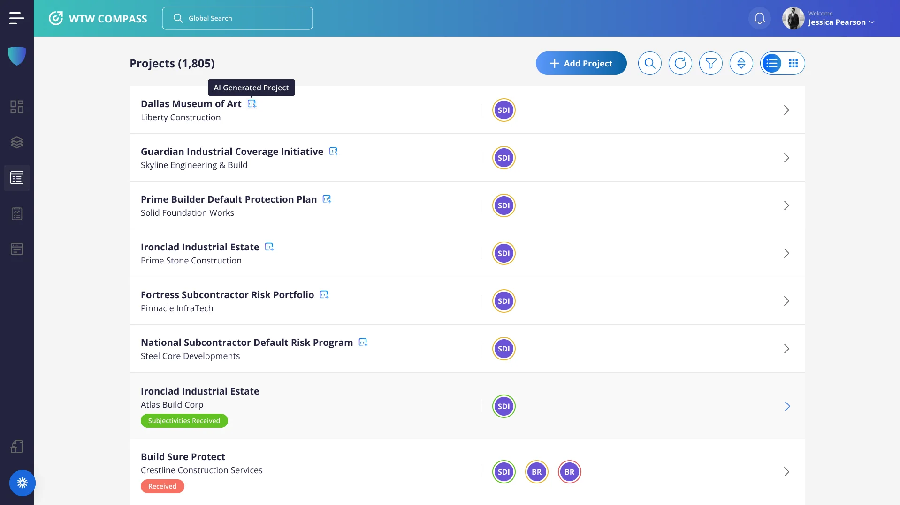
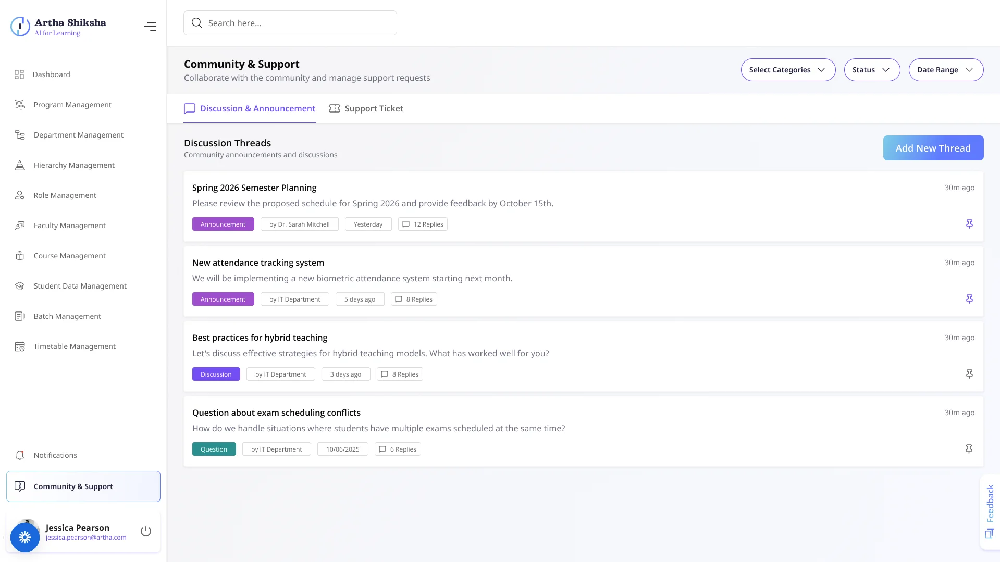
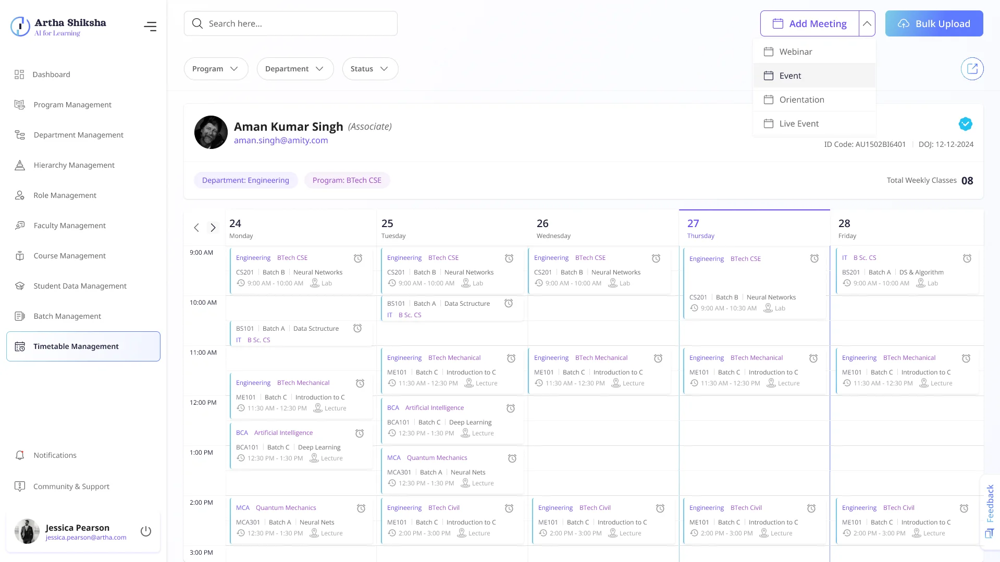
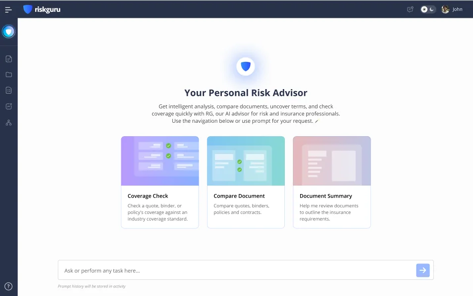
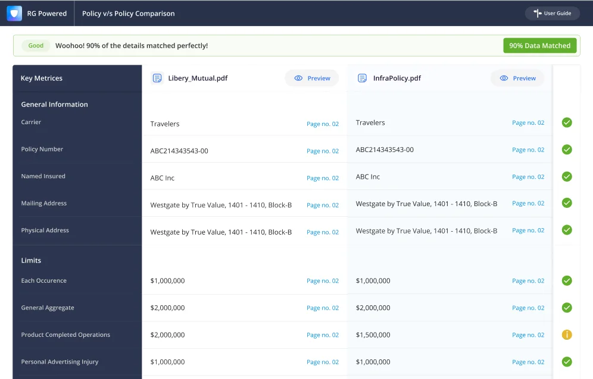
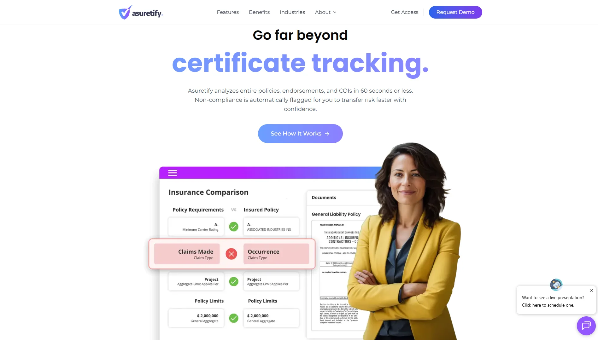
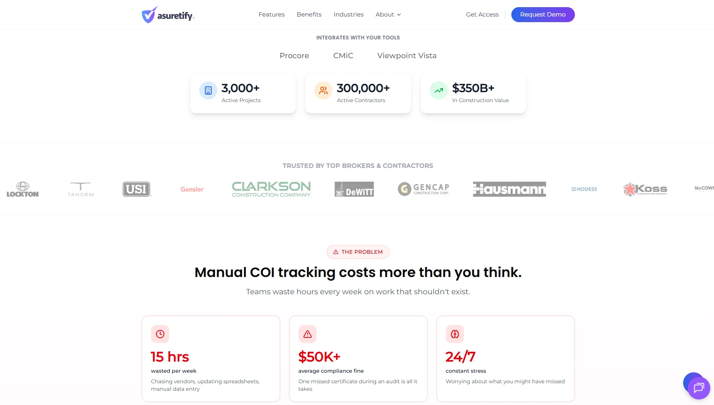

01 — Product & UX/UI Design
Make complex things feel clear.
Information architecture, user flows and interaction design for dense, multi-role B2B products. Turns complicated workflows into screens people can actually use.
Aman Singh. Product Designer for B2B SaaS and AI-native products.
Four areas of focus.
Product design is the core. Each area below strengthens the others, from first framing to final handoff.
01 — Product & UX/UI Design
Information architecture, user flows and interaction design for dense, multi-role B2B products. Turns complicated workflows into screens people can actually use.
02 — AI-native Experience
Interfaces where people review, direct and correct AI output, with the right balance of trust and control. Moves my practice from designing with AI to designing for it.
03 — Systems & Craft
Design systems, high-fidelity UI and clean handoff, so products stay coherent as they grow. Keeps the details sharp across every screen and release.
04 — Research & Strategy
Problem framing, discovery and validation that define what is worth building first. Gives every design decision something solid to stand on.
One designer. Four focus areas. Connected thinking.
About
I started in code and followed the harder problems: insurance workflows, systems at scale, and now AI. Three years of designing rule-heavy, multi-role products across web and mobile.
Injala Private Limited B2B SaaS
Jul 2023 – Jul 2026
Led end-to-end product design across complex insurance, SaaS and AI products, from discovery and workflow analysis through information architecture, interaction design, prototyping, high-fidelity UI and production.
Amity University, Ranchi
2018 – 2022
I began by learning how software is built, before I started designing it.
Design & prototyping
Research & testing
Delivery
Selected work
Four different challenges. One consistent way of thinking.








How I work
Six stages take a product from the first question to something that keeps improving, each one building on the last.
Discover & Frame · 01 / 06
Understand the people, the context and what is actually going wrong before opening a design file.
Example tools Notion · Maze · Hotjar · UserTesting
Structure & Flow · 02 / 06
Map roles, journeys and information so the product makes sense before it looks good.
Example tools Figma · FigJam
Design & Prototype · 03 / 06
Shape interfaces and interactions, and test ideas with prototypes people can click.
Example tools Figma · Figma Make · Framer · Spline · Lottie
Test & Refine · 04 / 06
Put the design in front of people and tighten whatever does not hold up.
Example tools Maze · Hotjar · UserTesting
Hand off & Ship · 05 / 06
Work with product and engineering so what ships matches what was intended.
Example tools Figma · Jira · GitHub
Measure & Evolve · 06 / 06
Learn from real usage and keep improving what comes next.
Example tools Hotjar · Maze · UserTesting · Jira
Frame the problem. Shape the system. Design the experience. Test it. Ship it. Keep evolving.
Everything you might want to know before getting in touch.
I’m a product designer focused on B2B SaaS and AI-native products. My work spans insurtech platforms, EdTech systems and AI-assisted workflows, covering research, information architecture, interaction design and design systems.
Yes. I’m open to product design roles on AI-native and B2B products, and to selected projects with early-stage teams. If you’re not sure which fits, send a note and we can work it out.
I use AI tools to move faster through research synthesis, exploration and prototyping. I also design for AI: shaping how people review, direct and correct what these systems produce, with human judgment kept in the loop.
Email me, or message me on WhatsApp or LinkedIn, with a short note on what you’re building or what’s stuck. You don’t need a detailed brief.
Closely and early. I join discovery, define flows with product, and stay involved through handoff and design QA so that what ships matches what was designed.
The case studies above cover context, process and outcomes for each project. More long-form work is on Behance, linked in the footer.
Didn’t find your question? Get in touch and I’ll take it from there.